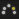

动画层窗格中显示动画层的堆栈。有关堆栈本身的信息，请参见动画层堆栈。
“动画层”(Animation Layer)窗格包含三个影响堆栈中动画层的主要组件：
- 动画层按钮
- 活动关键帧反馈
- 权重滑块
每个组件如下所述。
使用“显示”(Show)菜单中的选项，可以指定希望动画层窗格显示创建的所有动画层（），还是仅显示包含在场景中选择的对象属性的动画层（）。
可以使用“动画层”(Animation Layer)窗格重新排序动画层（在堆栈中上移或下移层），或者建立和断开动画层的父子关系。也可以更改动画层堆栈显示来翻转堆栈中层的显示。
在动画层上设置对象的关键帧后，将在该窗格中的每一层上显示活动关键帧反馈。
动画层按钮
动画层按钮显示在堆栈中每个动画层的旁边。
使用这些控件可以锁定、禁用或单放每个动画层。使用这些控件还可以启用和禁用层重影，以及更改重影/层颜色。
动画层按钮包括：
|
|
|
锁定 |
锁定动画层，使其不接收关键帧。这样可以在堆栈中更低的层上设定关键帧，而无需禁用其上的所有层。 锁定动画层后，其关键帧会继续作用于结果动画，但不能接收新的关键帧。 “基础动画”(BaseAnimation)栏也包含锁定按钮，以便可以锁定未分层的动画。 |
|
|
|
禁用 |
启用后，将禁用动画层。禁用动画层就像使其透明一样 – 您将无法在场景视图中再看到其效果。由于禁用层变为非活动状态，因此不会在最终结果中对其动画进行求值。 如果还需要锁定禁用层，使其不接收关键帧，则启用“锁定禁用层”(Lock Muted Layer)选项。 注： 如果禁用的动画层是其他层的父层，则同时也会禁用子层，但子层可独立于其父层单独禁用。
|
|
|
单放 |
单放动画层后，它会成为其层次级别的唯一活动层。这意味着它是唯一可设定关键帧的层，也是唯一在结果中播放其动画的层。将禁用处于相同层次级别的所有其他层及其子层。单放父层不会影响单放或禁用子层。 注： 可同时单放多个层。
|
|
|
|

|
重影/层颜色 |
切换动画层重影的显示，且可以设定每层的重影颜色。请参见显示分层动画的重影。 注： 使用该按钮更改重影颜色的同时也会设定层的关键帧标记 颜色。
|
活动关键帧反馈
动画层窗格中每层上的可视化反馈显示，如果在当前时间设定关键帧，则将为哪一层设定关键帧。每个动画层的状态取决于在“选项”(Options)菜单中选择的关键帧模式。（请参见动画层状态和为动画层上的对象设定关键帧。）
在您选择对象和设定关键帧时，每个动画层右侧的“信号灯”指示器会更改颜色，显示处于活动状态的层和受影响的层。
下表描述了动画层窗格中显示的活动关键帧反馈。
| 反馈 | 指示 |
|---|---|
|
绿色 |
动画层处于活动状态。它包含选定对象的属性并且将接收关键帧。 |
|
带点的绿色 |
该父层下一个当前收拢的子层处于活动状态。它包含选定对象的属性并且将接收关键帧。 注： 收拢后会取消选择动画层，但仍可接收关键帧。
|
|
红色 |
动画层受到影响。选定对象的一个或多个属性指定给该层，但该层未处于活动状态。 |
|
带点的红色 |
该父层下一个当前收拢的子层受到影响。子层包含选定对象的属性，但未处于活动状态。 |
权重滑块
使用“权重”(Weight)滑块可以控制结果中播放层的动画的程度。
默认情况下，动画层的“权重”(Weight)值设定为 1，意味着来自该层的动画将在结果中完全播放。将“权重”(Weight)值设定为 0 可有效地禁用层，这样便不会在场景中播放该层的任何动画。
请参见动画层权重。